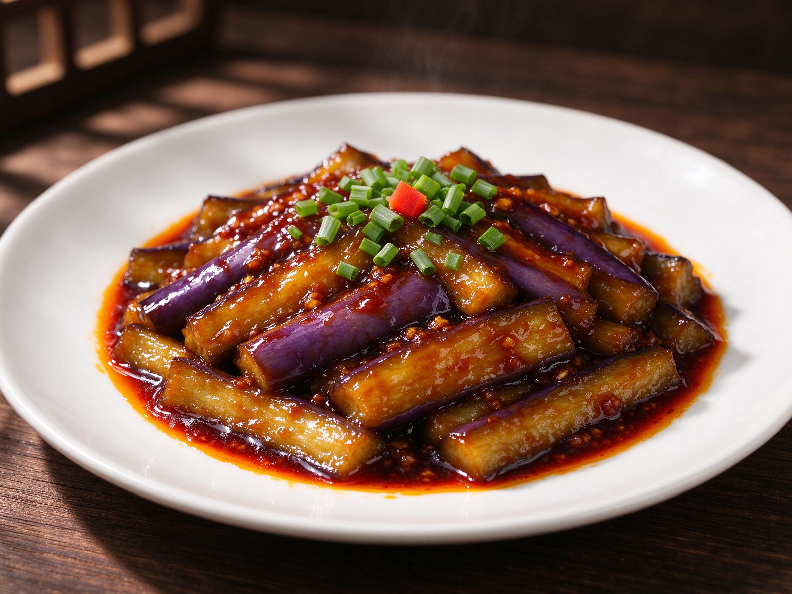

Yu-Xiang Eggplant: The Sichuan Sauce With No Fish In It
Yu-xiang (鱼香) translates as "fish-fragrant", and there is no fish anywhere in the recipe. The name comes from the seasoning set used in Sichuan fish cooking — pickled chili, vinegar, sugar, garlic, ginger and scallion — which cooks borrowed for eggplant, pork slivers and chicken. Once you know the ratio, you can put that sauce on almost anything, which makes this the highest-leverage recipe on the site.
The Flavour Profile, Decoded
Yu-xiang is not "spicy". It sits on four pillars held in balance:
- Pickled chili (pao la jiao) and Pixian doubanjiang — the aromatic heat and the fermented depth. This is what people mistake for "fish flavour": it's the smell of a Sichuan kitchen.
- Black vinegar — the sour edge, and it must be Chinese black vinegar, not balsamic. See the black vinegar guide.
- Sugar — nearly equal to the vinegar. Yu-xiang is sweet-sour before it is hot; that's why it reads as "fragrant" rather than "sharp".
- Garlic, ginger, scallion — in generous quantity, added late so they stay pungent rather than cooked out.
Ingredients (serves 2–3)
- 500 g aubergine/eggplant (2 medium Asian eggplants are better than one big globe)
- 1 tbsp Pixian doubanjiang, chopped fine — see choosing doubanjiang
- 1 tbsp pickled red chili, chopped (or 2 tsp chili paste if you can't find it)
- 3 cloves garlic, minced; 1 thumb ginger, minced; 3 spring onions, white parts minced, green parts sliced
- Sauce: 2 tbsp black vinegar, 1.5 tbsp sugar, 1 tbsp light soy, 1 tsp cornstarch, 4 tbsp water
- 3–4 tbsp neutral oil, plus 1 tsp sesame oil to finish
The Eggplant Problem
Eggplant is a sponge. Fried the traditional way it takes a third of a cup of oil before it softens, which is why restaurant versions taste luxurious and home versions taste greasy. Three fixes, in order of how much they cost you:
- Salt-brine first (do this). Cut into batons, toss with 1 tsp salt, soak in cold water 10 minutes, then squeeze dry. The cells pre-collapse, so they absorb far less oil.
- Steam, then fry. 6–8 minutes over boiling water until just tender, then a short shallow fry to brown the edges. Soft interior, crisp surface, a fraction of the oil.
- Air-fry or oven-roast. 200 °C for 12–15 minutes, tossed in 1 tbsp oil. Least authentic texture, easiest weeknight version.
Method
- Prep the eggplant as above and set it aside on paper towel.
- Mix the sauce in a bowl: vinegar, sugar, soy, cornstarch, water. Stir until the sugar dissolves.
- Heat the wok over medium heat with 2 tbsp oil. Fry the eggplant in one layer, 2–3 minutes per side, until golden at the edges and soft. Remove.
- Build the base. Lower the heat, add the remaining oil, then the doubanjiang and pickled chili. Stir 30–45 seconds until the oil turns red and the paste smells sweet rather than raw — this step cannot be rushed, and burnt doubanjiang is bitter and unfixable.
- Aromatics. Add garlic, ginger and spring onion whites; 20 seconds, no more.
- Return the eggplant, pour the sauce in, and toss over high heat 1–2 minutes until the sauce thickens and coats every piece. It should be glossy and clinging, not soupy.
- Finish off the heat with sesame oil and the green spring onion tops.
Variations Worth Knowing
- Yu-xiang pork slivers (yu xiang rou si) — same sauce, julienned pork instead of eggplant; stir-fry the pork first, then follow the identical sequence.
- Yu-xiang chicken — sliced thigh meat, velveted with cornstarch and a little water before frying.
- Vegetarian — swap the doubanjiang for a fermented soybean paste if you want it milder; keep the pickled chili or the dish loses its identity.
Troubleshooting
- Sauce tastes flat: not enough sugar, or the vinegar was added too early and cooked off. Add sugar off the heat and taste again.
- Bitter or harsh: doubanjiang scorched. Lower the heat next time and stir constantly for the first 45 seconds.
- Greasy: the eggplant wasn't brined and drank the oil. Fix the preparation, not the sauce.
- Sauce won't thicken: the cornstarch wasn't stirred into cold water first, or the heat was too low. Raise the heat and toss for another 30 seconds.
- Too hot: reduce pickled chili, not vinegar — cutting the sour makes the heat read louder.
Yu-xiang is a template, not a dish. Learn the ratio once and you've got the sauce for pork slivers, chicken, fried tofu, aubergine and anything else that needs sweet-sour garlicky depth in ten minutes.